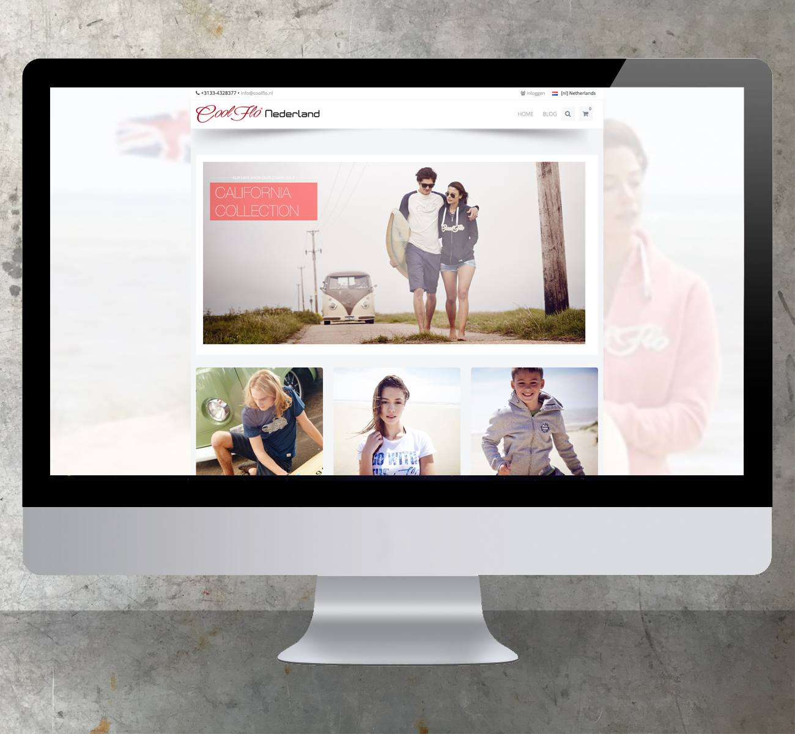

|
|
| [NTGV] Niels Timmerman Grafische Vormgeving [NTGV] is opgericht in 2001. Het is een jong en dynamisch bedrijf waar flexibiliteit en creativiteit centraal staan. NTGV biedt een totaalpakket aan van onder andere grafische vormgeving, huisstijl-ontwikkeling, dtp, drukwerkbegeleiding en webdesign. NTGV heeft een uitgebreid netwerk en werkt samen met diversen grafische bedrijven. Zo kan er snel, effectief en op een creatieve manier aan u geleverd worden! Aangezien Niels Timmerman Grafische Vormgeving een eenmansbedrijf is, heeft u bij ieder traject alleen met mij te maken en dat is wel zo gemakkelijk en persoonlijk. |
|
Freelancer nodig? Bent u te druk en is er een belangrijke deadline die nadert of is uw vormgever ziek en de klus moet geklaard!? Dan ben ik die creatieve, zelfstandige freelance vormgever die voor u klaar staat! Neem z.s.m. contact met mij op via onderstaande gegevens! |
Capaciteiten |
Partners |
Werkwijze Een opdracht begint met een goed gesprek waarin u kenbaar maakt wat uw wensen en ideeën zijn. Op basis daarvan begin ik met het (digitaal) ontwerpen van twee concepten. Deze stuur ik u toe en naar aanleiding van uw op- en aanmerkingen gaan we het concept uitwerken tot het geheel naar uw wens en verwachting is. |
Drukwerkbegeleiding NTGV werk vanaf begin 2001 al nauw samen met een aantal vaste drukkerijen. Dit heeft als voordeel dat de communicatie met de drukker en printer optimaal is. Ik heb de mogelijkheid uw druk-/printwerk goed in de gaten te houden. Zo is de kans op misverstanden of onnodige vertragingen vrijwel uitgesloten. |
Wat kunt u van ons verwachten |
 |
Contact Tel.: +31(0)33-432 83 77 |
|
|
|